Thunderkick Prototype Symbols
A collection of textures and atlases from the Thunderkick Prototype Symbols repository. Preview and download the assets provided below.
Bonus Folder
This folder contains bonus textures for additional features and effects.
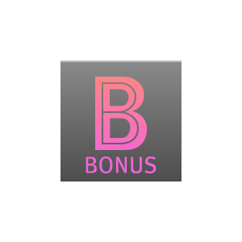
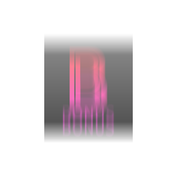
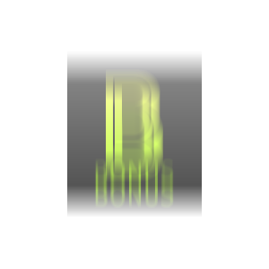
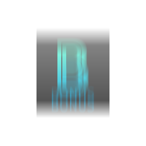
Download Bonus Atlas
Download Bonus TPS File
Feature Folder
This folder includes core symbols and textures for key designs.
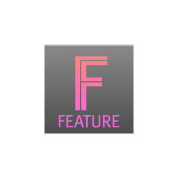
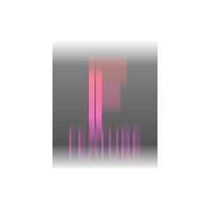
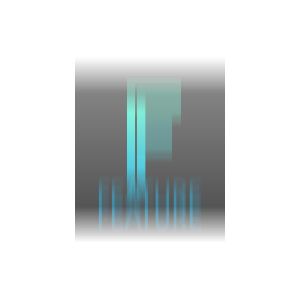
Download Feature Atlas
Download Feature TPS File
Misc Folder
This folder contains miscellaneous assets for various UI components or small textures.

Download Misc Atlas
Download Misc TPS File
Round Folder
This folder includes round symbols and their blurred counterparts.
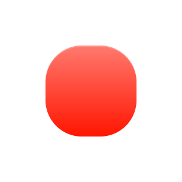
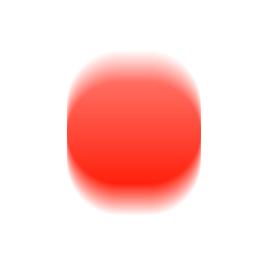
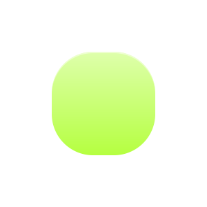
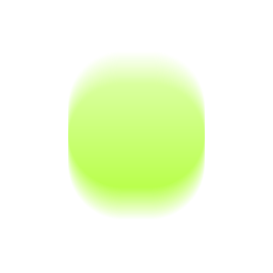
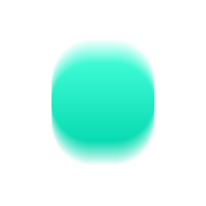
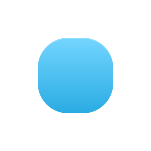
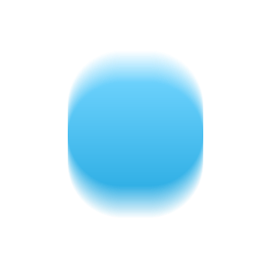
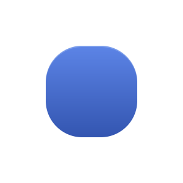
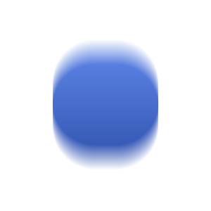
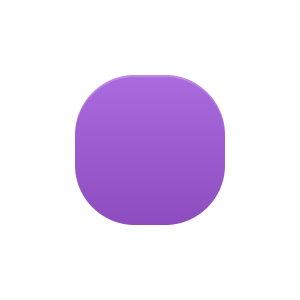
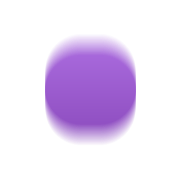
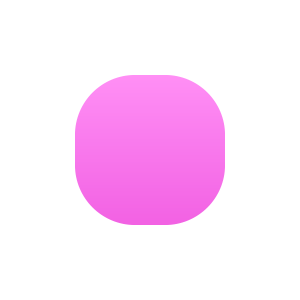
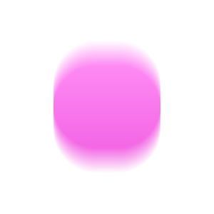
Download Round Atlas
Download Round TPS File
Royal Folder
This folder contains symbols and textures with a royal theme.
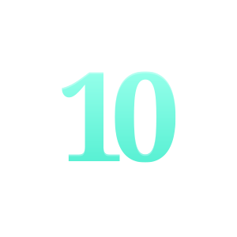
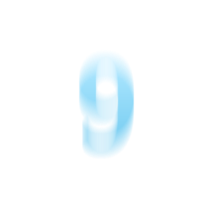
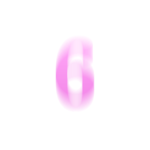
Download Royal Atlas
Download Royal TPS File
Square Folder
This folder contains square-shaped symbols and blurred variants.
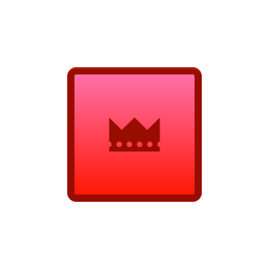
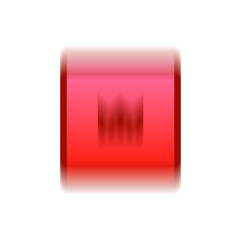
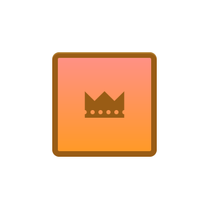
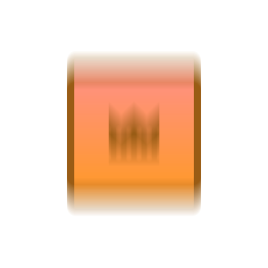
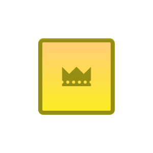
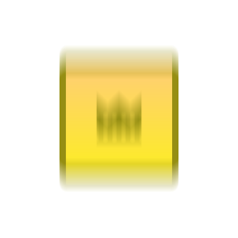
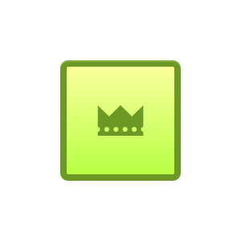
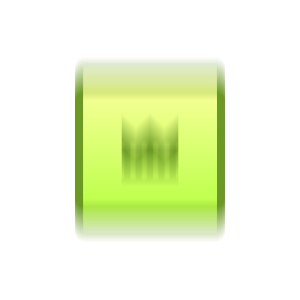
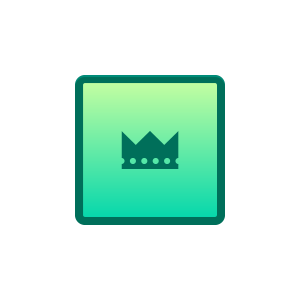
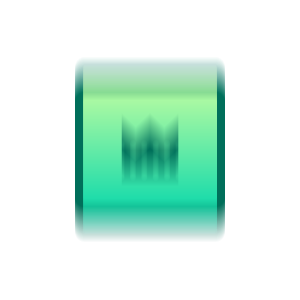
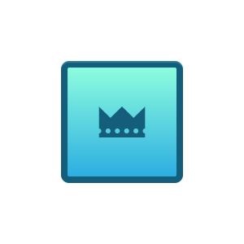
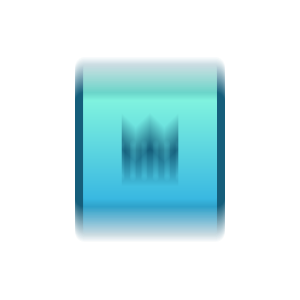
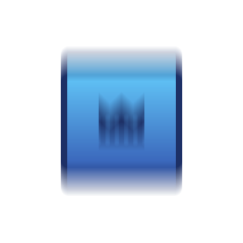
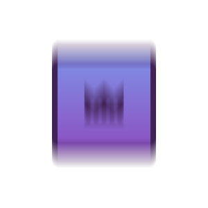
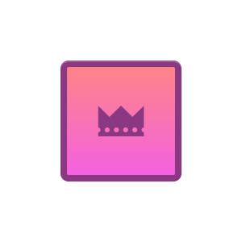
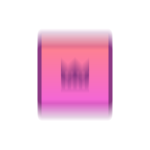
Download Square Atlas
Download Square TPS File
Wild Folder
This folder contains wild symbols, often used for special game features.
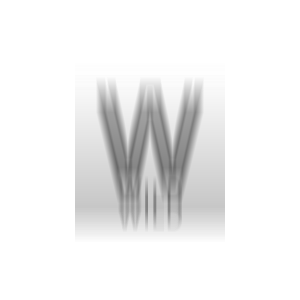
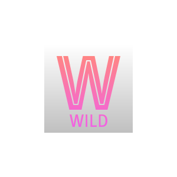
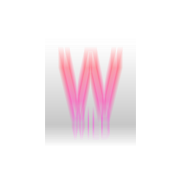
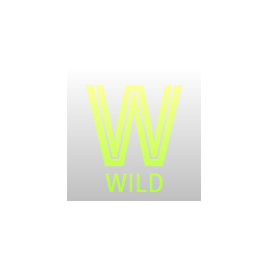
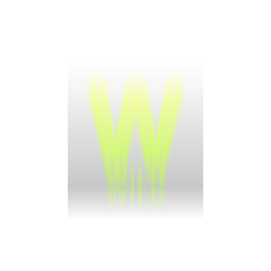
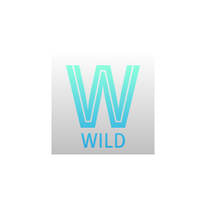
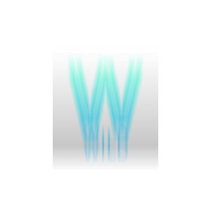
Download Wild Atlas
Download Wild TPS File